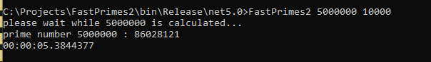

Corbin Martin Portfolio
Basic Echo Server
Basic Echo Server is a multithreaded socket server written in C# and Dotnet 6 that echoes messages sent from clients connecting over telnet.
Source Code
-
The project started as a learning experience to learn how to communicate over tcp sockets and how to write multithreaded code that can be useful during synchronous blocking calls such as synchronous receives over sockets.
-
Early in development, the project started with a server application that communicated over sockets asynchronously by using a thread to accept new clients and for each client that connected, a thread was created to synchronously receive data from that socket.
-
Later on in development, a connection object was created as a means of encapsulating communication between sockets. The connection object could handle the shut down of a socket, synchronous sends, synchronous receives, and even asynchronous receives. Asynchronous receives and socket shutdowns also invoked call back functions.
-
The project moved from a thread-per-client model on the server to a asynchronous receive model on the connection object to alleviate cpu overhead from context switching between threads and so the client applications could also do asynchronous receives.

Fast Primes 2
Fast Primes 2 is a multithreaded prime numbers calculator written in C# and Dotnet 6
Source Code
-
This is a sequel project to a single threaded prime numbers calculator written in C where the Sieve of Eratosthenes and other optimizations were used in order to significantly decrease the number of calculations needed in order to check if a number is prime. On a ryzen 5 3600 cpu machine, the 5 millionth prime on the original single threaded Fast Primes project could be found in about 196 seconds.
-
Fast Primes 2 takes advantage of a parallel foreach from the Parallel library to multithread testing of potentially prime numbers.
-
The parallel foreach divides out potentially prime numbers and if they are prime they are added to a list inside of a mutex for thread safety that will be sorted by a LINQ statement and counted later on to determine the current prime position.
-
The application can be given 2 command line arguments for the Nth prime you wish to find and how many potentially prime numbers do you wish to test at a given iteration of the parallel foreach loop.
-
The project turned out to be very successful with the 5 millionth prime being calculated on a ryzen 5 3600 cpu machine with 10k potential primes to test per iteration of the parallel foreach loop in just under 33 seconds.
-
The application performed even better with a ryzen 9 5900x cpu machine under the same conditions finding the 5 millionth prime in just under 5 seconds.

Hash Table Database
C Hash Table is a project to learn about how hash tables are constructed and how to deal with their various problems.
Source Code
-
The project started as an assignment for a data structures class in order to study how hash tables work.
-
The project uses a fixed size hash table and utilizes chaining as a means of collision management rather than something more complex such as probing. If the hash table encounters a collision with its hashing algorithm it creates a sentinel node to a linked list at each index of the hash table and if a collision occurs it will append the hash name and data to the linked list stored at that hash index.
-
The hash table does not undergo load management and because it is a fixed size, performance and efficiency can degrade with the growing size of the data stored in the hash table.
-
The project has been a very good learning experience to gain more insight into how hash tables are constructed.
Toon Tanks
Toon Tanks is a game written in Unreal 4 and C++ to learn about writing games in the unreal engine following along in a udemy class.
Source Code
-
The game is about creating a tank that can move around and shoot projectiles at turrets and if all the turrets are destroyed the player wins.
-
The idea of composition vs inheritance is very central to the learning experience of this project where it may be important to consider what items are specific enough to be a component vs what items can be inherited from some base class.
-
In the project multiple objects inherit from a base class such as the turret and the tank but they override methods in the base class in their own unique ways depending on what their purposes are.
-
The project deviates from the udemy guide by using custom 3d models that had to be modified in blender in order to fix problems with collisions inside the unreal engine.